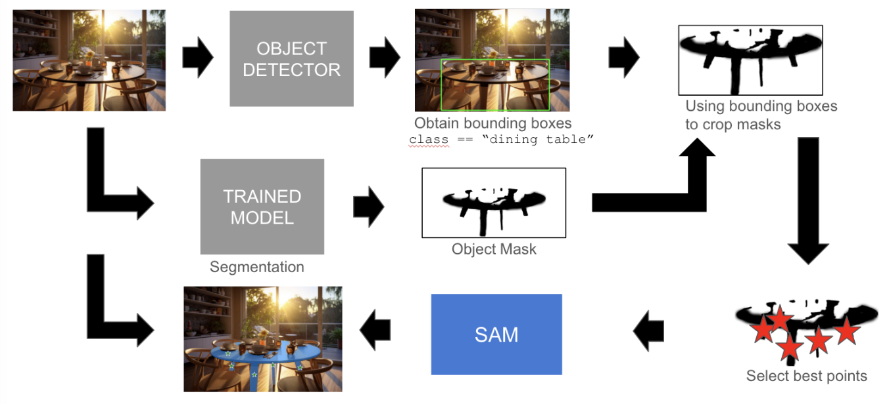

Lane detection model for autonomous vehicles
Developed and trained a transformer-based computer vision model to detect and segment street lane markers for autonomous driving applications.
I am currently pursuing a dual-degree Master of Science in Engineering (MSE) in Robotics (ROBO) and Computer and Information Science (CIS) at the University of Pennsylvania, where I am part of the GRASP Lab. My research interests focus on robotics, computer vision, and the development of scalable, safe perception systems. As a Research Assistant at xLab (under Prof. Rahul Mangharam), I contributed to the design, development, and deployment of an infrastructure-based system for autonomous navigation, focused on warehouse automation. In addition, I served as the Head Teaching Assistant for CIS 5810 Computer Vision & Computational Photography (under Prof. Jianbo Shi). I hold a Bachelor's degree in Economics from Johns Hopkins University.
Research Assistant, xLab - Safe Autonomous Systems Lab Infrastructure-based system for autonomous navigation, focused on warehouse automation (RetroLifts) Summer 2024, Fall 2024
Head Teaching Assistant, CIS 5810 Computer Vision & Computational Photography
Summer 2022, Fall 2022, Spring 2023, Fall 2023, Fall 2024
Head Teaching Assistant, ENGR 2900 Penn Global Seminar: Artificial Intelligence & Robotics
Spring 2024
TA Award (Student Nominated), CIS 5810 Computer Vision & Computational Photography
Summer 2022


Lane detection model for autonomous vehicles
Developed and trained a transformer-based computer vision model to detect and segment street lane markers for autonomous driving applications.

Text-to-object segmentation pipeline
Developed a pipeline for semantic object detection using category-specific bounding box prompts, enabling targeted segmentation and improving data annotation efficiency.

Automated prompting for segmentation
Conducted research to develop a framework that enhances Meta’s Segment Anything Model (SAM) by improving segmentation accuracy for targeted objects, particularly in cases where SAM’s bounding box prompts failed to fully segment the desired object.

Driver risk recognition platform
Designed and developed an application that detects when a driver is unfit to operate a vehicle (e.g. due to drowsiness or failure to properly scan the road).
I enjoy electronic/metal/punk rock music, movies/tv series, watching baseball, and exploring neighborhoods (and food).